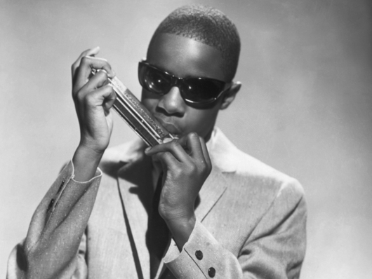
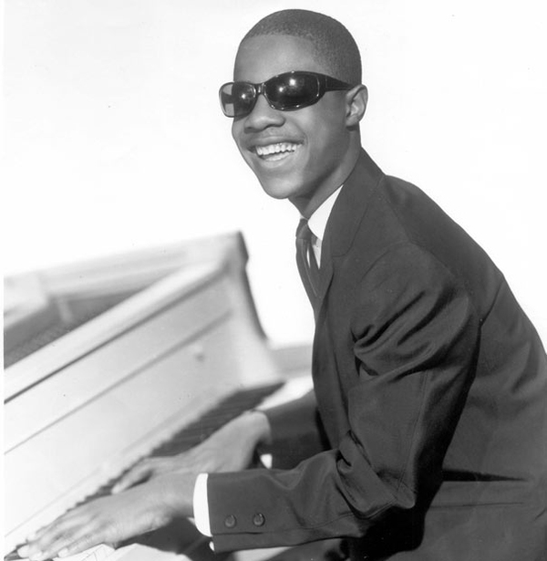
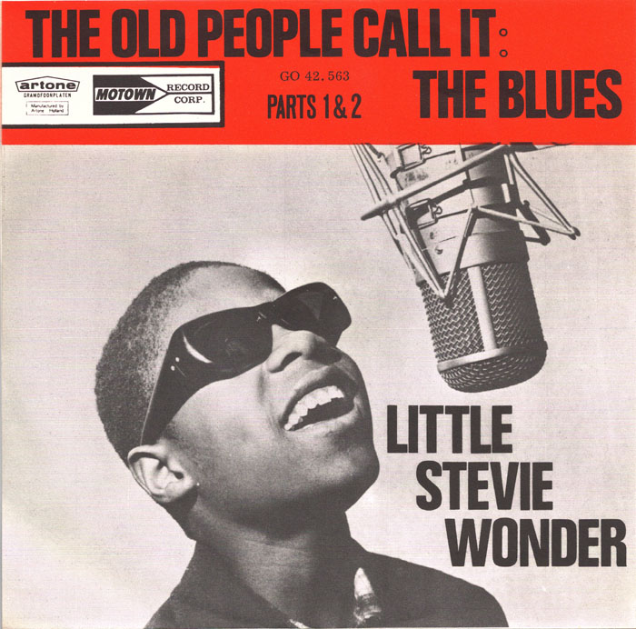

Early Life
Motown Years...

Stevie Wonder was born Stevland Hardaway Judkins in Michigan, USA in the 1950s. Born six weeks premature, he suffered retinal detachment that may have been made worse by incubator therapy. Wonder has been blind all his life, but says he has never felt disadvantaged. He spent some time at a school for the blind as a young man and can read Braille.
During the 1950s, Wonder’s mother left his father and moved the family to Detroit. Her children’s last name was changed to Morris, a family name. Wonder was very close to his mother, who co-wrote several songs with him, and her death in 2006 hit Wonder hard. Morris remains Stevie Wonder’s legal surname.

Throughout Wonder's childhood, it became clear he had much musical talent. Gifts of toy drums and a harmonica allowed Wonder to teach himself songs, which impressed others. A neighbour with a piano allowed Wonder to come over and play whenever he liked - his obvious passion made it difficult to say no! Wonder also sang in his church choir.
Wonder had many musical influences throughout his childhood; in particular, he adored Ray Charles, and one of his earliest albums was a collection of Charles cover versions called Tribute to Uncle Ray

Ronnie White, a musician in the Motown group The Miracles, discovered Stevie Wonder through family friends in 1961. Impressed by what he saw, Mr White set up an audition for Wonder at the blossoming Motown recording studio. Motown CEO Berry Gordy was definitely impressed and signed Wonder to Motown's Tamla label with the name "Little Stevie Wonder". Apparently, this trademark name came from a producer, Clarence Paul, who pointed out "we can't keep calling him the eighth wonder of the world"!
Wonder recorded his debut single, "I Call It Pretty Music, But the Old People Call It the Blues", which was then released by Tamla Motown in late 1961. However, it wasn't until 1963 that Little Stevie would release his first big hit, "Fingertips".
"Fingertips" live (1964)
"At Last" cover version (1969)